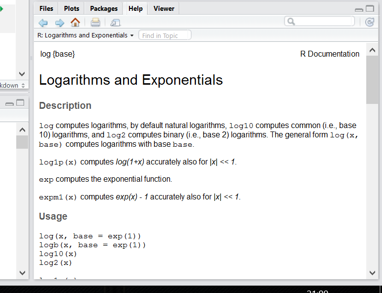

2 Введение в R
2.1 Наука о данных
Наука о данных — это новая область знаний, которая активно развивается в последнее время. Она находиться на пересечении компьютерных наук, статистики и математики, и трудно сказать, действительно ли это наука. При этом это движение развивается в самых разных научных направлениях, иногда даже оформляясь в отдельную отрасль:
- биоинформатика
- вычислительная криминалистика
- цифровые гуманитарные исследования
- датажурналистика
- …
Все больше книг “Data Science for …”:
- psychologists (Hansjörg 2019)
- immunologists (Thomas and Pallett 2019)
- business (Provost and Fawcett 2013)
- public policy (Brooks and Cooper 2013)
- fraud detection (Baesens, Van Vlasselaer, and Verbeke 2015)
- …
Среди умений датасаентистов можно перечислить следующие:
- сбор и обработка данных
- трансформация данных
- визуализация данных
- статистическое моделирование данных
- представление полученных результатов
- организация всей работы воспроизводимым способом
Большинство этих тем в той или иной мере будет представлено в нашем курсе.
2.2 Установка R и RStudio
В данной книге используется исключительно R (R Core Team 2019), так что для занятий понадобятся:
- R
- на Windows
- на Mac
- на Linux, также можно добавить зеркало и установить из командной строки:
sudo apt-get install r-cran-base- RStudio — IDE для R (можно скачать здесь)
- и некоторые пакеты на R
Часто можно увидеть или услышать, что R — язык программирования для “статистической обработки данных”. Изначально это, конечно, было правдой, но уже давно R — это полноценный язык программирования, который при помощи своих пакетов позволяет решать огромный спектр задач. В данной книге используется следующая версия R:
## [1] "R version 4.0.0 (2020-04-24)"Некоторые люди не любят устанавливать лишние программы себе на компьютер, несколько вариантов есть и для них:
- RStudio cloud — полная функциональность RStudio, пока бесплатная, но скоро это исправят;
- RStudio on rollApp — облачная среда, позволяющая разворачивать программы.
Первый и вполне закономерный вопрос: зачем мы ставили R и отдельно еще какой-то RStudio? Если опустить незначительные детали, то R — это сам язык программирования, а RStudio — это среда (IDE), которая позволяет в этом языке очень удобно работать.
2.3 Полезные ссылки
В интернете легко найти документацию и туториалы по самым разным вопросам в R, так что главный залог успеха — грамотно пользоваться поисковиком, и лучше на английском языке.
- книга (Wickham and Grolemund 2016) является достаточно сильной альтернативой всему курсу
- stackoverflow — сервис, где достаточно быстро отвечают на любые вопросы (не обязательно по R)
- RStudio community — быстро отвечают на вопросы, связанные с R
- русский stackoverflow
- R-bloggers — сайт, где собираются новинки, связанные с R
- чат, где можно спрашивать про R на русском (но почитайте правила чата, перед тем как спрашивать)
- чат по визуализации данных, чат датажурналистов
- канал про визуализацию, дата-блог “Новой газеты”, …
2.4 Rstudio
Когда вы откроете RStudio первый раз, вы увидите три панели: консоль, окружение и историю, а также панель для всего остального. Если ткнуть в консоли на значок уменьшения, то можно открыть дополнительную панель, где можно писать скрипт.

Существуют разные типы пользователей: одни любят работать в консоли (на картинке это 2 — R Console), другие предпочитают скрипты (1 — Code Editor). Консоль позволяет использовать интерактивный режим команда-ответ, а скрипт является по сути текстовым документом, фрагменты которого можно для отладки запускать в консоли.
3 — Workspace and History: Здесь можно увидеть переменные. Это поле будет автоматически обновляться по мере того, как Вы будете запускать строчки кода и создавать новые переменные. Еще там есть вкладка с историей последних команд, которые были запущены.
4 — Plots and files: Здесь есть очень много всего. Во-первых, небольшой файловый менеджер, во-вторых, там будут появляться графики, когда вы будете их рисовать. Там же есть вкладка с вашими пакетами (Packages) и Help по функциям. Но об этом потом.
2.5 Введение в R
2.5.1 R как калькулятор
Ой-ей, консоль, скрипт че-то все непонятно.
Давайте начнем с самого простого и попробуем использовать R как простой калькулятор. +, -, *, /, ^ (степень), () и т.д.
Просто запускайте в консоли пока не надоест:
## [1] 42## [1] 1## [1] 30## [1] 11## [1] 8## [1] 8Ничего сложного, верно? Вводим выражение и получаем результат. Порядок выполнения арифметических операций как в математике, так что не забывайте про скобочки.
Если Вы не уверены в том, какие операции имеют приоритет, то используйте скобочки, чтобы точно обозначить, в каком порядке нужно производить операции.

2.5.2 Функции
Давайте теперь извлечем корень из какого-нибудь числа. В принципе, тем, кто помнит школьный курс математики, возведения в степень вполне достаточно:
## [1] 4Ну а если нет, то можете воспользоваться специальной функцией: это обычно какие-то буквенные символы с круглыми скобками сразу после названия функции. Мы подаем на вход (внутрь скобочек) какие-то данные, внутри этих функций происходят какие-то вычисления, которые выдают в ответ какие-то другие данные (или же функция записывает файл, рисует график и т.д.).
Вот, например, функция для корня:
## [1] 4R — case-sensitive язык, т.е. регистр важен.
SQRT(16)не будет работать.
А вот так выглядит функция логарифма:
## [1] 2.079442Так, вроде бы все нормально, но… Если Вы еще что-то помните из школьной математики, то должны понимать, что что-то здесь не так.
Здесь не хватает основания логарифма!
Логарифм — показатель степени, в которую надо возвести число, называемое основанием, чтобы получить данное число.
То есть у логарифма 8 по основанию 2 будет значение 3:
\(\log_2 8 = 3\)
То есть если возвести 2 в степень 3 у нас будет 8:
\(2^3 = 8\)
Только наша функция считает все как-то не так.
Чтобы понять, что происходит, нам нужно залезть в хэлп этой функции:
Справа внизу в RStudio появится вот такое окно:

Действительно, у этой функции есть еще аргумент base =. По дефолту он равен числу Эйлера (2.7182818…), т.е. функция считает натуральный логарифм.
В большинстве функций R есть какой-то основной инпут — данные в том или ином формате, а есть и дополнительные параметры, которые можно прописывать вручную, если параметры по умолчанию нас не устраивают.
## [1] 3…или просто (если Вы уверены в порядке аргументов):
## [1] 3Более того, Вы можете использовать оутпут одних функций как инпут для других:
## [1] 3Если эксплицитно писать имена аргументов, то их порядок в функции не важен:
## [1] 3А еще можно недописывать имена аргументов, если они не совпадают с другими:
## [1] 3Мы еще много раз будем возвращаться к функциям. Вообще, функции — это одна из важнейших штук в R (примерно так же как и в Python). Мы будем создавать свои функции, использовать функции как инпут для функций и многое-многое другое. В R очень крутые возможности работы с функциями. Поэтому подружитесь с функциями, они клевые.
Арифметические знаки, которые мы использовали: +,-,/,^ и т.д. называются операторами и на самом деле тоже являются функциями:
## [1] 72.5.3 Переменные
Важная штука в программировании на практически любом языке — возможность сохранять значения в переменных. В R это обычно делается с помощью вот этих символов: <- (но можно использовать и обычное =, хотя это не очень принято). Для этого есть удобное сочетание клавиш: нажмите одновременно Alt - (или option - на Маке).
## [1] 2После присвоения переменная появляется во вкладке Environment в RStudio:

Можно использовать переменные в функциях и просто вычислениях:
## [1] 8## [1] 3Вы можете сравнивать разные переменные:
## [1] FALSEЗаметьте, что сравнивая две переменные мы используем два знака равно ==, а не один =. Иначе это будет означать присвоение.
## [1] 8Теперь Вы сможете понять комикс про восстание роботов на следующей странице (пусть он и совсем про другой язык программирования)

Этот комикс объясняет, как важно не путать присваивание и сравнение (хотя я иногда путаю до сих пор =( ).
Иногда нам нужно проверить на неравенство:
## [1] FALSE## [1] TRUEВосклицательный язык в программировании вообще и в R в частности стандартно означает отрицание.
Еще мы можем сравнивать на больше/меньше:
## [1] FALSE## [1] TRUE## [1] FALSE## [1] TRUE2.6 Типы данных
До этого момента мы работали только с числами (numeric):
## [1] "numeric"Вообще, в R много типов numeric: integer (целые), double (с десятичной дробью), complex (комплексные числа). Последние пишутся так:
complexnumber <- 2+2iОднако в R с этим обычно можно вообще не заморачиваться, R сам будет конвертить между форматами при необходимости. Немного подробностей здесь:
Разница между numeric и integer, Как работать с комплексными числами в R
Теперь же нам нужно ознакомиться с двумя другими важными типами данных в R:
- character: строки символов. Они должны выделяться кавычками. Можно использовать как
", так и'(что удобно, когда строчка внутри уже содержит какие-то кавычки).
## [1] "Всем привет!"## [1] "character"- logical: просто
TRUEилиFALSE.
## [1] TRUE## [1] FALSEВообще, можно еще писать T и F (но не True и False!)
Это дурная практика, так как R защищает от перезаписи переменные TRUE и FALSE, но не защищает от этого T и F
## Error in TRUE <- FALSE: invalid (do_set) left-hand side to assignment## [1] TRUE## [1] FALSEТеперь вы можете догадаться, что результаты сравнения, например, числовых или строковых переменных вы можете сохранять в переменные тоже!
## [1] FALSEЭто нам очень понадобится, когда мы будем работать с реальными данными: нам нужно будет постоянно вытаскивать какие-то данные из датасета, а это как раз и построено на игре со сравнением переменных.
Чтобы этим хорошо уметь пользоваться, нам нужно еще освоить как работать с логическими операторами. Про один мы немного уже говорили — это не (!):
## [1] TRUE## [1] FALSE## [1] TRUEЕще есть И (выдаст TRUE только в том случае если обе переменные TRUE):
## [1] TRUE## [1] FALSEА еще ИЛИ (выдаст TRUE в случае если хотя бы одна из переменных TRUE):
## [1] TRUE## [1] FALSEЕсли кому-то вдруг понадобиться другое ИЛИ — есть функция xor(), принимающий два аргумента.
Поздравляю, мы только что разобрались с самой занудной частью. Пора переходить к важному и интересному. ВЕКТОРАМ!
2.7 Вектор
Если у вас не было линейной алгебры (или у вас с ней было все плохо), то просто запомните, что вектор (или atomic vector или atomic) — это набор (столбик) чисел в определенном порядке.
P.S. Если вы привыкли из школьного курса физики считать вектора стрелочками, то не спешите возмущаться и паниковать. Представьте стрелочки как точки из нуля координат {0,0} до какой-то точки на координатной плоскости, например, {2,1}. Вот последние два числа и будем считать вектором. Поэтому постарайтесь на время выбросить стрелочки из головы.
На самом деле, мы уже работали с векторами в R, но, возможно, Вы об этом даже не догадывались. Дело в том, что в R нет как таковых “значений”, есть вектора длиной 1. Такие дела!
Чтобы создать вектор из нескольких значений, нужно воспользоваться функцией c():
## [1] 4 8 15 16 23 42## [1] "Хэй" "Хэй" "Ха"Одна из самых мерзких и раздражающих причин ошибок в коде — это использование
сиз кириллицы вместоcиз латиницы. Видите разницу? И я не вижу. А R видит. И об этом сообщает:
## Error in с(3, 4, 5): could not find function "с"Для создания числовых векторов есть удобный оператор :
## [1] 1 2 3 4 5 6 7 8 9 10## [1] 5 4 3 2 1 0 -1 -2 -3Этот оператор создает вектор от первого числа до второго с шагом 1. Вы не представляете, как часто эта штука нам пригодится… Если же нужно сделать вектор с другим шагом, то есть функция seq():
## [1] 10 20 30 40 50 60 70 80 90 100Кроме того, можно задавать не шаг, а длину вектора. Тогда шаг функция seq() посчитает сама:
## [1] 1 5 9 13Другая функция — rep() — позволяет создавать вектора с повторяющимися значениями. Первый аргумент — значение, которое нужно повторять, а второй аргумент — сколько раз повторять.
## [1] 1 1 1 1 1И первый, и второй аргумент могут быть векторами!
## [1] 1 2 3 1 2 3 1 2 3## [1] 1 2 2 3 3 3Еще можно объединять вектора (что мы, по сути, и делали, просто с векторами длиной 1):
## [1] "Hey" "Ho" "Let's" "Go!"2.7.1 Coercion
Что будет, если вы объедините два вектора с значениями разных типов? Ошибка? Мы уже обсуждали, что в atomic может быть только один тип данных. В некоторых языках программирования при операции с данными разных типов мы бы получили ошибку. А вот в R при несовпадении типов пройзойдет попытка привести типы к “общему знаменателю”, то есть конвертировать данные в более “широкий” тип.
Например:
## [1] 0 2FALSE превратился в 0 (а TRUE превратился бы в 1), чтобы можно было оба значения объединить в вектор. То же самое произошло бы в случае операций с векторами:
## [1] 3Это называется coercion. Более сложный пример:
## [1] "TRUE" "3" "Привет"У R есть иерархия коэрсинга:
NULL < raw < logical < integer < double < complex < character < list < expression.
Мы из этого списка еще многого не знаем, сейчас важно запомнить, что логические данные — TRUE и FALSE — превращаются в 0 и 1 соответственно, а 0 и 1 в строчки "0" и "1".
Если Вы боитесь полагаться на coercion, то можете воспользоваться функциями as.нужныйтипданных:
## [1] 1 0 0## [1] "1" "0" "0"Можно превращать и обратно, например, строковые значения в числовые. Если среди числа встретится буква или другой неподходящий знак, то мы получим предупреждение NA — пропущенное значение (мы очень скоро научимся с ними работать).
## Warning: NAs introduced by coercion## [1] 1 2 NA2.7.2 Операции с векторами
Все те арифметические операции, что мы использовали ранее, можно использовать с векторами одинаковой длины:
## [1] 5 5 5 5## [1] -3 -1 1 3## [1] 4 6 6 4## [1] 0.2500000 0.6666667 1.5000000 4.0000000## [1] -11 5 11 7Если после какого-нибудь MATLAB Вы привыкли, что по умолчанию операторы работают по правилам линейной алгебры и
m*nбудет давать скалярное произведение (dot product), то снова нет. Для скалярного произведения нужно использовать операторы с%по краям:
## [,1]
## [1,] 20Абсолютно так же и с операциями с матрицами в R, хотя про матрицы будет немного позже.
В принципе, большинство функций в R, которые работают с отдельными значениями, так же хорошо работают и с целыми векторами. Скажем, Вы хотите извлечь корень из нескольких чисел, для этого не нужны никакие циклы (как это обычно делается в других языках программирования). Можно просто “скормить” вектор функции и получить результат применения функции к каждому элементу вектора:
## [1] 1.000000 1.414214 1.732051 2.000000 2.236068 2.449490 2.645751 2.828427
## [9] 3.000000 3.1622782.7.3 Recycling
Допустим мы хотим совершить какую-нибудь операцию с двумя векторами. Как мы убедились, с этим обычно нет никаких проблем, если они совпадают по длине. А что если вектора не совпадают по длине? Ничего страшного! Здесь будет работать правило ресайклинга (recycling = правило переписывания). Это означает, что если короткий вектор кратен по длине длинному, то он будет повторять короткий необходимое количество раз:
## [1] 1 4 3 8А что будет, если совершать операции с вектором и отдельным значением? Можно считать это частным случаем ресайклинга: короткий вектор длиной 1 будет повторятся столько раз, сколько нужно, чтобы он совпадал по длине с длинным:
## [1] 2 4 6 8Если же меньший вектор не кратен большему (например, один из них длиной 3, а другой длиной 4), то R посчитает результат, но выдаст предупреждение.
## Warning in n + c(3, 4, 5): longer object length is not a multiple of shorter
## object length## [1] 4 6 8 7Проблема в том, что эти предупреждения могут в неожиданный момент стать причиной ошибок. Поэтому не стоит полагаться на ресайклинг некратных по длине векторов. См. здесь. А вот ресайклинг кратных по длине векторов — это очень удобная штука, которая используется очень часто.
2.7.4 Индексирование векторов
Итак, мы подошли к одному из самых сложных моментов. И одному из основных. От того, как хорошо вы научись с этим работать, зависит весь Ваш дальнейший успех на R-поприще!
Речь пойдет об индексировании векторов. Задача, которую Вам придется решать каждые пять минут работы в R - как выбрать из вектора (или же списка, матрицы и датафрейма) какую-то его часть. Для этого используются квадратные скобочки [] (не круглые - они для функций!).
Самое простое - индексировать по номеру индекса, т.е. порядку значения в векторе.
## [1] 1## [1] 10Если вы знакомы с другими языками программирования (не MATLAB, там все так же) и уже научились думать, что индексация с 0 — это очень удобно и очень правильно (ну или просто свыклись с этим), то в R Вам придется переучиться обратно. Здесь первый индекс — это 1, а последний равен длине вектора — ее можно узнать с помощью функции
length(). С обоих сторон индексы берутся включительно.
С помощью индексирования можно не только вытаскивать имеющиеся значения в векторе, но и присваивать им новые:
## [1] 1 2 20 4 5 6 7 8 9 10Конечно, можно использовать целые векторы для индексирования:
## [1] 4 5 6 7## [1] 10 9 8 7 6 5 4 20 2 1Индексирование с минусом выдаст вам все значения вектора кроме выбранных (простите, пользователя Python, которые ожидают здесь отсчет с конца…):
## [1] 2 20 4 5 6 7 8 9 10## [1] 1 2 20 6 7 8 9 10Более того, можно использовать логический вектор для индексирования. В этом случае нужен логический вектор такой же длины:
## [1] 1 20 5 7 9Ну а если они не равны, то тут будет снова работать правило ресайклинга!
## [1] 1 20 5 7 9Есть еще один способ индексирования векторов, но он несколько более редкий: индексирование по имени. Дело в том, что для значений векторов можно (но не обязательно) присваивать имена:
## first
## 1А еще можно “вытаскивать” имена из вектора с помощью функции names() и присваивать таким образом новые.
## a
## 1
letters- это “зашитая” в R константа - вектор букв от a до z. Иногда это очень удобно! Кроме того, есть константаLETTERS- то же самое, но заглавными буквами. А еще есть названия месяцев на английском и числовая константаpi.
Теперь посчитаем среднее вектора n:
## [1] 7.2А как вытащить все значения, которые больше среднего?
Сначала получим логический вектор — какие значения больше среднего:
## [1] FALSE FALSE TRUE FALSE FALSE FALSE FALSE TRUE TRUE TRUEА теперь используем его для индексирования вектора n:
## [1] 20 8 9 10Можно все это сделать в одну строчку:
## [1] 20 8 9 10Предыдущая строчка отражает то, что мы будем постоянно делать в R: вычленять (subset) из данных отдельные куски на основании разных условий.
2.7.5 NA — пропущенные значения
В реальных данных у нас часто чего-то не хватает. Например, из-за технической ошибки или невнимательности не получилось записать какое-то измерение. Для этого в R есть NA. NA — это не строка "NA", не 0, не пустая строка "" и не FALSE. NA — это NA.
Большинство операций с векторами, содержащими NA будут выдавать NA:
## [1] NA## [1] NA## [1] NAЗаметьте: даже сравнение NA c NA выдает NA!
Иногда NA в данных очень бесит:
## [1] 1 2 20 4 NA 6 7 8 9 10## [1] NAЧто же делать?
Наверное, надо сравнить вектор с NA и исключить этих пакостников. Давайте попробуем:
## [1] NA NA NA NA NA NA NA NA NA NAАх да, мы ведь только что узнали, что даже сравнение NA c NA приводит к NA.
Чтобы выбраться из этой непростой ситуации, используйте функцию is.na():
## [1] FALSE FALSE FALSE FALSE TRUE FALSE FALSE FALSE FALSE FALSEРезультат выполнения is.na(n) выдает FALSE в тех местах, где у нас числа и TRUE там, где у нас NA. Нам нужно сделать наоборот. Здесь нам понадобится оператор ! (мы его уже встречали), который инвертирует логические значения:
## [1] 1 2 20 4 6 7 8 9 10Ура, мы можем считать среднее!
## [1] 7.444444Теперь Вы понимаете, зачем нужно отрицание (!)
Вообще, есть еще один из способов посчитать среднее, если есть NA. Для этого надо залезть в хэлп по функции mean():
В хэлпе мы найдем параметр na.rm =, который по дефолту FALSE. Вы знаете, что нужно делать!
## [1] 7.444444Еееее!
NAможет появляться в векторах других типов тоже. КромеNAесть ещеNaN— это разные вещи.NaNрасшифровывается как Not a Number и получается в результате таких операций как0/0.
2.7.6 В любой непонятной ситуации — ищите в поисковике
Если вдруг вы не знаете, что искать в хэлпе, или хэлпа попросту недостаточно, то… ищите в поисковике!

Нет ничего постыдного в том, чтобы искать в Интернете решения проблем. Это абсолютно нормально. Используйте силу интернета во благо и да помогут Вам Stackoverflow и бесчисленные R-туториалы!
Computer Programming To Be Officially Renamed “Googling Stack Overflow”
— Stack Exchange July 20, 2015
Source: http://t.co/xu7acfXvFF pic.twitter.com/iJ9k7aAVhd
Главное, помните: загуглить работающий ответ всегда недостаточно. Надо понять, как и почему он работает. Иначе что-то обязательно пойдет не так.
Кроме того, правильно загуглить проблему — не так уж и просто.
Does anyone ever get good at R or do they just get good at googling how to do things in R
— 🔬🖤Lauren M. Seyler, Ph.D.❤️⚒ href=“https://twitter.com/mousquemere/status/1125522375141883907?ref_src=twsrc%5Etfw”>May 6, 2019
Итак, с векторами мы более-менее разобрались. Помните, что вектора — это один из краеугольных камней Вашей работы в R. Если Вы хорошо с ними разобрались, то дальше все будет довольно несложно. Тем не менее, вектора — это не все. Есть еще два важных типа данных: списки (list) и матрицы (matrix). Их можно рассматривать как своеобразное “расширение” векторов, каждый в свою сторону. Ну а списки и матрицы нужны чтобы понять основной тип данных в R — data.frame.

2.8 Матрицы (matrix)
Если вдруг Вас пугает это слово, то совершенно зря. Матрица — это всего лишь “двумерный” вектор: вектор, у которого есть не только длина, но и ширина. Создать матрицу можно с помощью функции matrix() из вектора, указав при этом количество строк и столбцов.
## [,1] [,2] [,3] [,4]
## [1,] 1 6 11 16
## [2,] 2 7 12 17
## [3,] 3 8 13 18
## [4,] 4 9 14 19
## [5,] 5 10 15 20Если мы знаем сколько значений в матрице и сколько мы хотим строк, то количество столбцов указывать необязательно:
## [,1] [,2] [,3] [,4]
## [1,] 1 6 11 16
## [2,] 2 7 12 17
## [3,] 3 8 13 18
## [4,] 4 9 14 19
## [5,] 5 10 15 20Все остальное так же как и с векторами: внутри находится данные только одного типа. Поскольку матрица — это уже двумерный массив, то у него имеется два индекса. Эти два индекса разделяются запятыми.
## [1] 12## [,1] [,2] [,3]
## [1,] 2 7 12
## [2,] 3 8 13
## [3,] 4 9 14Первый индекс — выбор строк, второй индекс — выбор колонок. Если же мы оставляем пустое поле вместо числа, то мы выбираем все строки/колонки в зависимости от того, оставили мы поле пустым до или после запятой:
## [,1] [,2] [,3]
## [1,] 1 6 11
## [2,] 2 7 12
## [3,] 3 8 13
## [4,] 4 9 14
## [5,] 5 10 15## [,1] [,2] [,3] [,4]
## [1,] 2 7 12 17
## [2,] 3 8 13 18
## [3,] 4 9 14 19## [,1] [,2] [,3] [,4]
## [1,] 1 6 11 16
## [2,] 2 7 12 17
## [3,] 3 8 13 18
## [4,] 4 9 14 19
## [5,] 5 10 15 20В принципе, это все, что нам нужно знать о матрицах. Матрицы используются в R довольно редко, особенно по сравнению, например, с MATLAB. Но вот индексировать матрицы хорошо бы уметь: это понадобится в работе с датафреймами.
То, что матрица - это просто двумерный вектор, не является метафорой: в R матрица - это по сути своей вектор с дополнительными атрибутами
dimиdimnames. Атрибуты — это неотъемлемые свойства объектов, для всех объектов есть обязательные атрибуты типа и длины и могут быть любые необязательные атрибуты. Можно задавать свои атрибуты или удалять уже присвоенные: удаление атрибутаdimу матрицы превратит ее в обычный вектор. Про атрибуты подробнее можно почитать здесь или на стр. 99–101 книги “R in a Nutshell” (Adler 2010).
2.9 Списки (list)
Теперь представим себе вектор без ограничения на одинаковые данные внутри. И получим список!
## [[1]]
## [1] 42
##
## [[2]]
## [1] "Пам пам"
##
## [[3]]
## [1] TRUEА это значит, что там могут содержаться самые разные данные, в том числе и другие списки и векторы!
## [[1]]
## [1] "Wow" "this" "list" "is" "so" "big"
##
## [[2]]
## [1] "16"
##
## [[3]]
## [[3]][[1]]
## [1] 42
##
## [[3]][[2]]
## [1] "Пам пам"
##
## [[3]][[3]]
## [1] TRUEЕсли у нас сложный список, то есть очень классная функция, чтобы посмотреть, как он устроен, под названием str():
## List of 3
## $ : chr [1:6] "Wow" "this" "list" "is" ...
## $ : chr "16"
## $ :List of 3
## ..$ : num 42
## ..$ : chr "Пам пам"
## ..$ : logi TRUEКак и в случае с векторами мы можем давать имена элементам списка:
## $age
## [1] 24
##
## $PhDstudent
## [1] FALSE
##
## $language
## [1] "Russian"К списку можно обращаться как с помощью индексов, так и по именам. Начнем с последнего:
## [1] 24А вот с индексами сложнее, и в этом очень легко запутаться. Давайте попробуем сделать так, как мы делали это раньше:
## $age
## [1] 24Мы, по сути, получили элемент списка - просто как часть списка, т.е. как список длиной один:
## [1] "list"## [1] "list"А вот чтобы добраться до самого элемента списка (и сделать с ним что-то хорошее) нам нужна не одна, а две квадратных скобочки:
## [1] 24## [1] "numeric"Indexing lists in #rstats. Inspired by the Residence Inn pic.twitter.com/YQ6axb2w7t
— Hadley Wickham (@ href=“https://twitter.com/hadleywickham/status/643381054758363136?ref_src=twsrc%5Etfw”>September 14, 2015
Как и в случае с вектором, к элементу списка можно обращаться по имени.
## [1] 24Хотя последнее — практически то же самое, что и использование знака $.
Списки довольно часто используются в R, но реже, чем в Python. Со многими объектами в R, такими как результаты статистических тестов, объекты ggplot и т.д. удобно работать именно как со списками — к ним все вышеописанное применимо. Кроме того, некоторые данные мы изначально получаем в виде древообразной структуры — хочешь не хочешь, а придется работать с этим как со списком. Но обычно после этого стоит как можно скорее превратить список в датафрейм.
2.10 Data.frame
Итак, мы перешли к самому главному. Самому-самому. Датафреймы (data.frames). Более того, сейчас станет понятно, зачем нам нужно было разбираться со всеми предыдущими темами.
Без векторов мы не смогли бы разобраться с матрицами и списками. А без последних мы не сможем понять, что такое датафрейм.
name <- c("Ivan", "Eugeny", "Lena", "Misha", "Sasha")
age <- c(26, 34, 23, 27, 26)
student <- c(FALSE, FALSE, TRUE, TRUE, TRUE)
df = data.frame(name, age, student)
df## 'data.frame': 5 obs. of 3 variables:
## $ name : chr "Ivan" "Eugeny" "Lena" "Misha" ...
## $ age : num 26 34 23 27 26
## $ student: logi FALSE FALSE TRUE TRUE TRUEВообще, очень похоже на список, не правда ли? Так и есть, датафрейм — это что-то вроде проименованного списка, каждый элемент которого является atomic вектором фиксированной длины. Скорее всего, список Вы представляли “горизонтально”. Если это так, то теперь “переверните” его у себя в голове. Так, чтоб названия векторов оказались сверху, а колонки стали столбцами. Поскольку длина всех этих векторов равна (обязательное условие!), то данные представляют собой табличку, похожую на матрицу. Но в отличие от матрицы, разные столбцы могут имет разные типы данных: первая колонка — character, вторая колонка — numeric, третья колонка — logical. Тем не менее, обращаться с датафреймом можно и как с проименованным списком, и как с матрицей:
## [1] 34 23Здесь мы сначала вытащили колонку age с помощью оператора $. Результатом этой операции является числовой вектор, из которого мы вытащили кусок, выбрав индексы 2 и 3.
Используя оператор $ и присваивание можно создавать новые колонки датафрейма:
Ну а можно просто обращаться с помощью двух индексов через запятую, как мы это делали с матрицей:
Как и с матрицами, первый индекс означает строчки, а второй — столбцы.
А еще можно использовать названия колонок внутри квадратных скобок:
## [1] 26 34И здесь перед нами открываются невообразимые возможности! Узнаем, любят ли R те, кто моложе среднего возраста в группе:
## [1] TRUE TRUE TRUE TRUEЭту же задачу можно выполнить другими способами:
## [1] TRUE TRUE TRUE TRUE## [1] TRUE TRUE TRUE TRUEВ большинстве случаев подходят сразу несколько способов — тем не менее, стоит овладеть ими всеми.
Датафреймы удобно просматривать в RStudio. Для это нужно написать команду View(df) или же просто нажать на названии нужной переменной из списка вверху справа (там где Environment). Тогда увидите табличку, очень похожую на Excel и тому подобные программы для работы с таблицами. Там же есть и всякие возможности для фильтрации, сортировки и поиска… Но, конечно, интереснее все эти вещи делать руками, т.е. с помощью написания кода.
На этом пора заканчивать с введением и приступать к реальным данным.
2.11 Начинаем работу с реальными данными
Итак, пришло время перейти к реальным данным. Мы начнем с использования датасета (так мы будем называть любой набор данных) по Игре Престолов, а точнее, по книгам цикла “Песнь льда и пламени” Дж. Мартина. Да, будут спойлеры, но сериал уже давно закончился и сильно разошелся с книгами…
2.11.1 Рабочая папка и проекты
Для начала скачайте файл по ссылке
Он, скорее всего, появился у Вас в папке “Загрузки”. Если мы будем просто пытаться прочитать этот файл (например, с помощью read.csv() — мы к этой функцией очень скоро перейдем), указав его имя и разрешение, то наткнемся на такую ошибку:
Ошибка в file(file, “rt”) :не могу открыть соединение Вдобавок: Предупреждение: В file(file, “rt”) : не могу открыть файл ‘character-deaths.csv’: No such file or directory
Это означает, что R не может найти нужный файл. Вообще-то мы даже не сказали, где искать. Нам нужно как-то совместить место, где R ищет загружаемые файлы и сами файлы. Для этого есть несколько способов.
- Магомет идет к горе: перемещение файлов в рабочую папку.
Для этого нужно узнать, какая папка является рабочей с помощью функции getwd() (без аргументов), найти эту папку в проводнике и переместить туда файл. После этого можно использовать просто название файла с разрешением:
- Гора идет к Магомету: изменение рабочей папки.
Можно просто сменить рабочую папку с помощью setwd() на ту, где сейчас лежит файл, прописав путь до этой папки. Теперь файл находится в рабочей папке:
Этот вариант использовать не рекомендуется. Как минимум, это сразу делает невозможным запустить скрипт на другом компьютере.
- Гора находит Магомета по месту прописки: указание полного пути файла.
Этот вариант страдает теми же проблемами, что и предыдущий, поэтому тоже не рекомендуется.
Для пользователей Windows есть дополнительная сложность: знак
/является особым знаком для R, поэтому вместо него нужно использовать двойной//.
- Магомет использует кнопочный интерфейс: Import Dataset.
Во вкладке Environment справа в окне RStudio есть кнопка “Import Dataset”. Возможно, у Вас возникло непреодолимое желание отдохнуть от написания кода и понажимать кнопочки — сопротивляйтесь этому всеми силами, но не вините себя, если не сдержитесь.
- Гора находит Магомета в интернете.
Многие функции в R, предназначенные для чтения файлов, могут прочитать файл не только на Вашем компьютере, но и сразу из интернета. Для этого просто используйте ссылку вместо пути:
got <- read.csv("https://raw.githubusercontent.com/Pozdniakov/stats/master/data/character-deaths.csv")- Каждый Магомет получает по своей горе: использование проектов в RStudio.
На первый взгляд это кажется чем-то очень сложным, но это не так. Это очень просто и ОЧЕНЬ удобно. При создании проекта создается отдельная папочка, где у Вас лежат данные, хранятся скрипты, вспомогательные файлы и отчеты. Если нужно вернуться к другому проекту — просто открываете другой проект, с другими файлами и скриптами. Это еще помогает не пересекаться переменным из разных проектов — а то, знаете, использование двух переменных data в разных скриптах чревато ошибками. Поэтому очень удобным решением будет выделение отдельного проекта под этот курс.
2.11.2 Импорт данных
Как Вы уже поняли, импортирование данных - одна из самых муторных и неприятных вещей в R. Если у Вас получится с этим справится, то все остальное - ерунда. Мы уже разобрались с первой частью этого процесса - нахождением файла с данными, осталось научиться их читать.
Здесь стоит сделать небольшую ремарку. Довольно часто данные представляют собой табличку. Или же их можно свести к табличке. Такая табличка, как мы уже выяснили, удобно репрезентируется в виде датафрейма. Но как эти данные хранятся на компьютере? Есть два варианта: в бинарном и в текстовом файле.
Текстовый файл означает, что такой файл можно открыть в программе “Блокнот” или ее аналоге и увидеть напечатанный текст: скрипт, роман или упорядоченный набор цифр и букв. Нас сейчас интересует именно последний случай. Таблица может быть представлена как текст: отдельные строчки в файле будут разделять разные строчки таблицы, а какой-нибудь знак-разделитель отделет колонки друг от друга.
Для чтения данных из текстового файла есть довольно удобная функция read.table(). Почитайте хэлп по ней и ужаснитесь: столько разных параметров на входе! Но там же вы увидете функции read.csv(), read.csv2() и некоторые другие — по сути, это тот же read.table(), но с другими дефолтными параметрами, соответствующие формату файла, который мы загружаем. В данном случае используется формат .csv, что означает Comma Separated Values (Значения, Разделенные Запятыми). Это просто текстовый файл, в котором “закодирована” таблица: разные строчки разделяют разные строчки таблицы, а столбцы отделяются запятыми. С этим связана одна проблема: в некоторых странах (в т.ч. и России) принято использовать запятую для разделения дробной части числа, а не точку, как это делается в большинстве стран мира. Поэтому есть “другой” формат .csv, где значения разделены точкой с запятой (;), а дробные значения - запятой (,). В этом и различие функций read.csv() и read.csv2() — первая функция предназначена для “международного” формата, вторая - для (условно) “Российского”.
В первой строчке обычно содержатся названия столбцов - и это чертовски удобно, функции read.csv() и read.csv2() по дефолту считают первую строчку именно как название для колонок.
Итак, прочитаем наш файл. Для этого используем только параметр file =, который идет первым, и для параметра stringsAsFactors = поставим значение FALSE:
По сути, факторы - это примерно то же самое, что и character, но закодированные числами. Когда-то это было придумано для экономии используемых времени и памяти, сейчас же обычно становится просто лишней морокой. Но некоторые функции требуют именно character, некоторые factor, в большинстве случаев это без разницы. Но иногда непонимание может привести к дурацким ошибкам. В данном случае мы просто пока обойдемся без факторов.
Можете проверить с помощью View(got): все работает! Если же вылезает какая-то странная ерунда или же просто ошибка - попробуйте другие функции и покопаться с параметрами. Для этого читайте Help.
Кроме .csv формата есть и другие варианты хранения таблиц в виде текста. Например, .tsv
- тоже самое, что и .csv, но разделитель - знак табуляции. Для чтения таких файлов есть функция read.delim() и read.delim2(). Впрочем, даже если бы ее и не было, можно было бы просто подобрать нужные параметры для функции read.table(). Есть даже функции, которые пытаются сами “угадать” нужные параметры для чтения — часто они справляются с этим довольно удачно. Но не всегда. Поэтому стоит научиться справляться с любого рода данными на входе.
Тем не менее, далеко не всегда таблицы представлены в виде текстового файла. Самый распространенный пример таблицы в бинарном виде — родные форматы Microsoft Excel. Если Вы попробуете открыть .xlsx файл в Блокноте, то увидите кракозябры. Это делает работу с этим файлами гораздо менее удобной, поэтому стоит избегать экселевских форматов и стараться все сохранять в .csv.
Для работы с экселевскими файлами есть много пакетов: readxl, xlsx, openxlsx. Для чтения файлов SPSS, Stata, SAS есть пакет foreign. Что такое пакеты и как их устанавливать мы изучим позже.
2.12 Препроцессинг данных в R
Вчера мы узнали про основы языка R, про то, как работать с векторами, списками, матрицами и, наконец, датафреймами. Мы закончили день на загрузке данных, с чего мы и начнем сегодня:
После загрузки данных стоит немного “осмотреть” получившийся датафрейм got.
2.12.1 Исследование данных
Ок, давайте немного поизучаем датасет. Обычно мы привыкли глазами пробегать по данным, листая строки и столбцы — и это вполне правильно и логично, от этого не нужно отучаться. Но мы можем дополнить наш базовый зрительнопоисковой инструментарий несколькими полезными командами.
Во-первых, вспомним другую полезную функцию str():
## 'data.frame': 917 obs. of 13 variables:
## $ Name : chr "Addam Marbrand" "Aegon Frey (Jinglebell)" "Aegon Targaryen" "Adrack Humble" ...
## $ Allegiances : chr "Lannister" "None" "House Targaryen" "House Greyjoy" ...
## $ Death.Year : int NA 299 NA 300 NA NA 300 300 NA NA ...
## $ Book.of.Death : int NA 3 NA 5 NA NA 4 5 NA NA ...
## $ Death.Chapter : int NA 51 NA 20 NA NA 35 NA NA NA ...
## $ Book.Intro.Chapter: int 56 49 5 20 NA NA 21 59 11 0 ...
## $ Gender : int 1 1 1 1 1 1 1 0 1 1 ...
## $ Nobility : int 1 1 1 1 1 1 1 1 1 0 ...
## $ GoT : int 1 0 0 0 0 0 1 1 0 0 ...
## $ CoK : int 1 0 0 0 0 1 0 1 1 0 ...
## $ SoS : int 1 1 0 0 1 1 1 1 0 1 ...
## $ FfC : int 1 0 0 0 0 0 1 0 1 0 ...
## $ DwD : int 0 0 1 1 0 0 0 1 0 0 ...Давайте разберемся с переменными в датафрейме:
Колонка Name — здесь все понятно. Важно, что эти имена записаны абсолютно по-разному: где-то с фамилией, где-то без, где-то в скобочках есть пояснения. Колонка Allegiances — к какому дому принадлежит персонаж. С этим сложно, иногда они меняют дома, здесь путаются сами семьи и персонажи, лояльные им. Особой разницы между Stark и House Stark нет. Следующие колонки - Death Year, Book.of.Death, Death.Chapter, Book.Intro.Chapter — означают номер главы, в которой персонаж впервые появляется, а так же номер книги, глава и год (от завоевания Вестероса Эйгоном Таргариеном), в которой персонаж умирает. Gender — 1 для мужчин, 0 для женщин. Nobility — дворянское происхождение персонажа. Последние 5 столбцов содержат информацию, появлялся ли персонаж в книге (всего книг пока что 5).
Другая полезная функция для больших таблиц — функция head(): она выведет первые несколько (по дефолту 6) строчек датафрейма.
Есть еще функция tail(). Догадайтесь сами, что она делает.
Для некоторых переменных полезно посмотреть таблицы частотности с помощью функции table():
##
## Arryn Baratheon Greyjoy House Arryn House Baratheon
## 23 56 51 7 8
## House Greyjoy House Lannister House Martell House Stark House Targaryen
## 24 21 12 35 19
## House Tully House Tyrell Lannister Martell Night's Watch
## 8 11 81 25 116
## None Stark Targaryen Tully Tyrell
## 253 73 17 22 15
## Wildling
## 40Уау! Очень просто и удобно, не так ли? Функция table() может принимать сразу несколько столбцов. Это удобно для получения таблиц сопряженности:
##
## 0 1
## Arryn 3 20
## Baratheon 6 50
## Greyjoy 4 47
## House Arryn 3 4
## House Baratheon 0 8
## House Greyjoy 1 23
## House Lannister 2 19
## House Martell 7 5
## House Stark 6 29
## House Targaryen 5 14
## House Tully 0 8
## House Tyrell 4 7
## Lannister 12 69
## Martell 7 18
## Night's Watch 0 116
## None 51 202
## Stark 21 52
## Targaryen 1 16
## Tully 2 20
## Tyrell 6 9
## Wildling 16 242.12.2 Subsetting
Как мы обсуждали на прошлом занятии, мы можем сабсеттить (выделять часть датафрейма) датафрейм, обращаясь к нему и как к матрице: датафрейм[вектор_с_номерами_строк, вектор_с_номерами_колонок]
и используя имена колонок:
## [1] "Mance Rayder" "Mandon Moore" "Maric Seaworth" "Marei"
## [5] "Margaery Tyrell" "Marillion" "Maris" "Marissa Frey"и даже используя вектора названий колонок!
Мы можем вытаскивать отдельные колонки как векторы:
houses <- got$Allegiances
unique(houses) #посмотреть все уникальные значения --- почти как с помощью table()## [1] "Lannister" "None" "House Targaryen" "House Greyjoy"
## [5] "Baratheon" "Night's Watch" "Arryn" "House Stark"
## [9] "House Tyrell" "Tyrell" "Stark" "Greyjoy"
## [13] "House Lannister" "Martell" "House Martell" "Wildling"
## [17] "Targaryen" "House Arryn" "House Tully" "Tully"
## [21] "House Baratheon"Итак, давайте решим нашу первую задачу — вытащим в отдельный датасет всех представителей Ночного Дозора.
Для этого нам нужно создать вектор логических значений — результат сравнений колонки Allegiances со значением "Night's Watch" и использовать его как вектор индексов для датафрейма.
## [1] FALSE FALSE FALSE FALSE FALSE FALSEТеперь этот вектор с TRUE и FALSE нам надо использовать для индексирования строк. Но что со столбцами? Если мы хотем сохранить все столбцы, то после запятой внутри квадратных скобок нам не нужно ничего указывать:
Вуаля! Все это можно сделать проще и в одну строку:
И не забывайте про запятую!
Теперь попробуем вытащить одновременно всех Одичалых (Wildling) и всех представителей Ночного Дозора. Это можно сделать, используя оператор | (ИЛИ) при выборе колонок:
nightwatch_wildling <- got[got$Allegiances == "Night's Watch" | got$Allegiances == "Wildling",]
head(nightwatch_wildling)Кажется очевидным следующий вариант:
got[got$Allegiances == c("Night's Watch", "Wildling"),]. Однако это выдаст не совсем то, что нужно, хотя результат может показаться верным на первый взгляд. Попробуйте самостоятельно ответить на вопрос, что происходит в данном случае и чем результат отличается от предполагаемого. Подсказка: вспомните правило recycling.
Для таких случаев есть удобный оператор %in%, который позволяет сравнить каждое значение вектора с целым набором значений. Если значение вектора хотя бы один раз встречается в векторе справа от %in%, то результат — TRUE:
## [1] TRUE FALSE FALSE TRUE TRUE FALSEnightwatch_wildling <- got[got$Allegiances %in% c("Night's Watch", "Wildling"),]
head(nightwatch_wildling)2.12.3 Создание новых колонок
Давайте создадим новую колонку, которая будет означать, жив ли еще персонаж (по книгам).
Заметьте, что в этом датасете, хоть он и посвящен смертям персонажей, нет нужной колонки. Мы можем попытаться “вытащить” эту информацию. В колонках Death.Year, Death.Chapter и Book.of.Death стоит NA у многих персонажей. Например, у Arya Stark, которая и по книгам, и по сериалу живее всех живых и мертвых:
Следовательно, если в Book.of.Death стоит NA, мы можем предположить, что Джордж Мартин еще не занес своей карающей руки над этим героем.
Мы можем создать новую колонку Is.Alive:
2.12.4 data.table vs. tidyverse
В принципе, с помощью базового R можно сделать все, что угодно. Однако базовые инструменты R — не всегда самые удобные. Идея сделать работу с датафреймами в R еще быстрее и удобнее сподвигла разработчиков на создание новых инструментов — data.table и tidyverse (dplyr). Это два конкурирующих подхода, которые сильно перерабатывают язык, хотя это по-прежнему все тот же R — поэтому их еще называют “диалектами” R.
Оба подхода обладают своими преимуществами и недостатками, но на сегодняшний день tidyverse считается более популярным. Основное преимущество этого подхода — в относительной легкости освоения. Обычно код, написанный в tidyverse можно примерно понять, даже не владея им.
Преимущество data.table — в суровом лаконичном синтаксисе и наиболее эффективных алгоритмах. Последние обеспечивают очень серьезный прирост в скорости в работе с данными. Чтение файлов и манипуляция данными может быть на порядки быстрее, поэтому если Ваш датасет с трудом пролезает в оперативную память компьютера, а исполнение скрипта занимает длительное время - стоит задуматься о переходе на data.table.
Что из этого учить — решать Вам, но знать оба совсем не обязательно: они решают те же самые задачи, просто совсем разными способами. За data.table — скорость, за tidyverse - понятность синтаксиса. Очень советую почитать обсуждение на эту тему здесь.
Ссылки на литературу
Adler, Joseph. 2010. R in a Nutshell: A Desktop Quick Reference. " O’Reilly Media, Inc.".
Baesens, Bart, Veronique Van Vlasselaer, and Wouter Verbeke. 2015. Fraud Analytics Using Descriptive, Predictive, and Social Network Techniques: A Guide to Data Science for Fraud Detection. John Wiley & Sons.
Brooks, Harvey, and Chester L Cooper. 2013. Science for Public Policy. Elsevier.
Hansjörg, Neth. 2019. Data Science for Psychologists. self published.
Provost, Foster, and Tom Fawcett. 2013. Data Science for Business: What You Need to Know About Data Mining and Data-Analytic Thinking. O’Reilly Media, Inc.
R Core Team. 2019. R: A Language and Environment for Statistical Computing. Vienna, Austria: R Foundation for Statistical Computing. https://www.R-project.org/.
Thomas, Niclas, and Laura Pallett. 2019. Data Science for Immunologists. CreateSpace Independent Publishing Platform.
Wickham, Hadley, and Garrett Grolemund. 2016. R for Data Science: Import, Tidy, Transform, Visualize, and Model Data. O’Reilly Media, Inc.